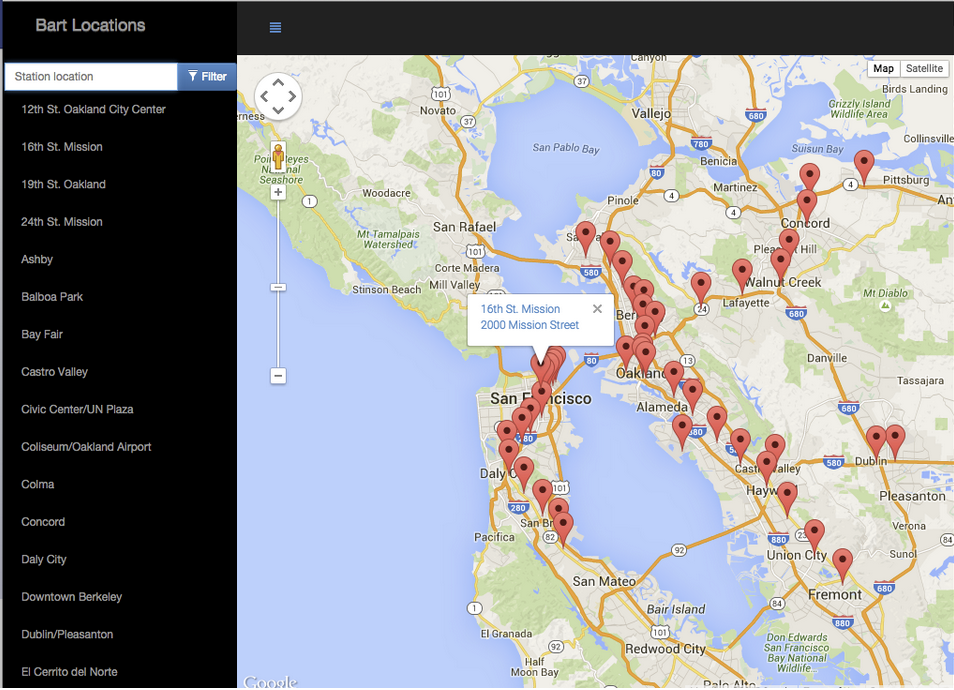

Movie Trailer
You will write server-side code to store a list of your favorite movies, including box art imagery and a movie trailer URL. You will then use your code to generate a static web page allowing visitors to browse their movies and watch the trailers.
Item Catalog
You will develop an application that provides a list of items within a variety of categories as well as provide a user registration and authentication system. Registered users will have the ability to post, edit and delete their own items.

Neighbourhood Map
You will develop a single page application featuring a map of your neighborhood or a neighborhood you would like to visit. You will then add functionality to this map including highlighted locations, third-party data about those locations and various ways to browse the content.
Linux Server Configure
You will take a baseline installation of a Linux server and prepare it to host your web applications. You will secure your server from a number of attack vectors, install and configure a database server, and deploy one of your existing web applications onto it.